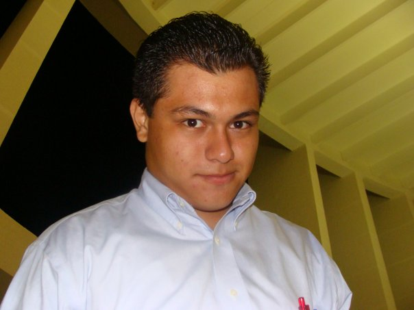

RadioUnicaribe
Conoce más sobre nosotros.
Nuestra misión.
Ser el canal para la participación de la comunidad Universitaria de una manera familiar y socialmente responsable, promoviendo los valores culturales así como el conocimiento científico a fin contribuir a la formación de una conciencia colectiva y al bienestar de los radio escuchas en un espacio de formación y preparación de todos los profesionales por medio de las tecnologías de comunicación.
Entonces, ¿Quiénes somos?
Somos, exclusivamente, estudiantes de los diversos planes educativos con los que cuenta la Universidad del Caribe. Juntos hemos decidido crear un medio de comunicación que permita a los estudiantes y a la comunidad en general informarse de los eventos de preservación ecológica, cultural, avances científico, tecnológico y deportivos asi como también dar a conocer toda las investigaciones que desarrolla la universidad y organismos no gubernamentales.
Siendo nuestra virtud el trabajo en equipo y la aplicación de nuestros conocimientos adquiridos a lo largo de nuestros estudios en este proyecto denominado RadioUnicaribe sin perder la jovialidad, momentos de diversión y sin perder los objetivos planteados en todo momento.
Staff
Al ser un trabajo en equipo comprendemos los retos que se van generando con cada paso que damos. Buscamos siempre la participación de cada uno de nuestros integrantes así como también estamos dispuestos a aceptar críticas constructivas y nuevos aspirantes.
RadioUnicaribe no es un proyecto de unos cuantos, como staff creemos que cada estudiante tiene un compromiso consigo mismo y con su comunidad, regresandole a través del esfuerzo diario elementos que le puedan brindar a los demás conocimiento.
Congeniamos con los valores que persigue nuestra casa de estudios, la Universidad del Caribe.
Público meta.
Principalmente la juventud universitaria. Sin embargo es para nosotros una satisfacción la aceptación del publico en general. Queremos lograr con ello la integración de todos los públicos en un espacio de equidad, valores y conocimiento científico. Nos llena de orgullo ser parte de tí y que nos permitas acompañarte día con día en cada transmisión que realizamos.
Nuestra Historia
- 2010
- 23 de Febrero.- Se realizó la primera transmisión experimental. Se usó unicamente una laptop y un micrófono, a cargo del estudiante Hiram J. Hernández Navarrete.
- 2010
- 17 de Marzo.- Se constituyó el equipo de 6 estudiantes que fundan RadioUnicaribe y presentán el proyecto al Rector de la Universidad del Caribe el Maestro Arturo Escaip Manzur.
- 2011
- El grupo realizó el primer casting de RadioUnicaribe donde participan mas de 50 estudiantes de los diversos planes educativos.
- 2011
- Previo a las vacaciones de verano se entablaron pláticas con el Rector de la Universidad y las autoridades del Sistema Quintanarroense de Comunicación Social (SQCS) para desarrollar un trabajo en conjunto de un programa en FM, llamado así Caribe más Caribe.
- 2012
- Los estudiantes proyectan para el 2012 ofrecer servicios de radio y televisión por internet y la integración de estudiantes de otras instituciones de nivel medio superior y superior que deseen desarrollar sus habilidades en los medios de comunicación.

Walther González de la 2da Generación.
Locutor en Caribe mas Caribe.